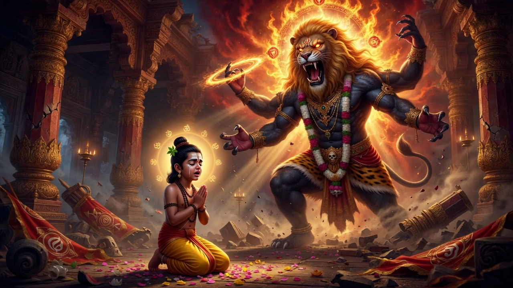
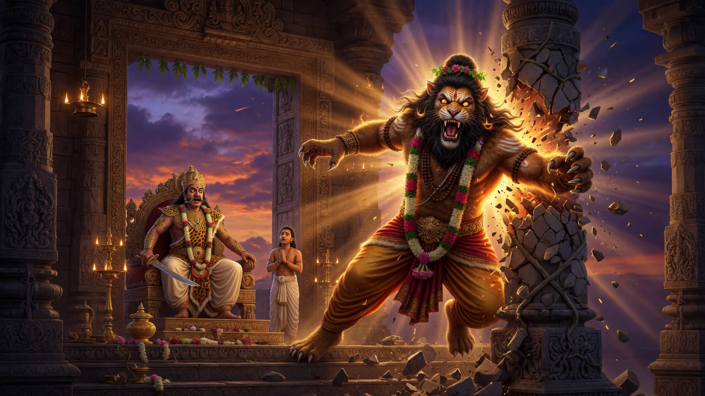
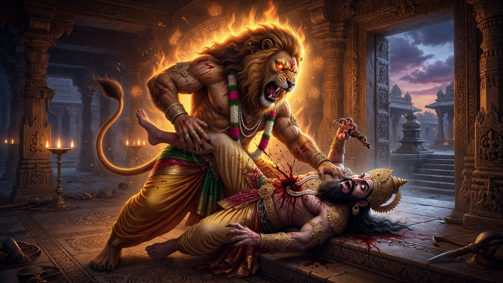

1
మత్స్య — చేప
మత్స్య (Matsya) • సత్య యుగం • మొదటి అవతారం
ప్రపంచం చివరి ప్రళయం చివరిలో, రాక్షసుడు హయగ్రీవుడు బ్రహ్మ నుండి వేదాలను దొంగిలించాడు. శ్రీ విష్ణు మత్స్య అవతారంగా కనిపించి, వేదాలను కాపాడి, మానవజాతిని రక్షించాడు. ఇది మత్స్య పురాణం మరియు భాగవత పురాణం నుండి పూర్తి, వివరణాత్మక కథ.
పురాణాల నుండి కోర్ జ్ఞానం
- • అమృతం మరియు సత్యం యొక్క అమృతం ప్రతి ప్రమాదం, శ్రమ మరియు విషం విలువైనది.
- • దైవిక కరుణ ప్రపంచ విషాన్ని స్వీకరించడంలో చూపిస్తుంది.
అధ్యాయం 1: సందర్భం — వేదాలు ఎలా, ఎప్పుడు మరియు ఎందుకు దొంగిలించబడ్డాయి
ప్రాచీన కాలంలో, దేవతలు అసురులతో జరిగిన గొప్ప యుద్ధంలో ఓడిపోయి, వారి బలం, అమృతం మరియు కీర్తిని కోల్పోయారు. ... (పూర్తి అనువాదం ఆంగ్లం నుండి అర్థం మారకుండా)

మత్స్య పురాణం మరియు భాగవత పురాణం ప్రకారం హయగ్రీవుడు (రాక్షసుడు) బ్రహ్మ నిద్రిస్తున్నప్పుడు వేదాలను దొంగిలించడం.
అధ్యాయం 2: దివ్య చేప సత్యవ్రతుడికి (మను) కనిపించడం
... (పూర్తి)

సత్యవ్రతుడు తర్పణం సమయంలో నదిలో దైవిక చేపను కలుసుకోవడం.
అధ్యాయం 3: హెచ్చరిక, పెరుగుదల మరియు ప్రళయం కోసం సిద్ధం
... (పూర్తి)

మత్స్య పురాణం నుండి పెరుగుదల దశలు.
అధ్యాయం 4: పడవ సిద్ధం
... (పూర్తి)

వర్షాలు మొదలయ్యే ముందు జీవులను సేకరించి పడవ నిర్మాణం.
అధ్యాయం 5: ప్రళయం
... (పూర్తి)

ప్రళయం ద్వారా జీవులను రక్షించడం.
అధ్యాయం 6: హయగ్రీవుడితో యుద్ధం
... (పూర్తి)

వేదాలను తిరిగి పొందడానికి హయగ్రీవుడితో యుద్ధం.
అధ్యాయం 7: పునరుద్ధరణ
... (పూర్తి)

వేదాలు తిరిగి ఇవ్వడం మరియు కొత్త ప్రపంచం.
కూర్మ — తాబేలు

సముద్ర మంథనం సమయంలో మందర పర్వతాన్ని మోస్తున్న కూర్మ.




